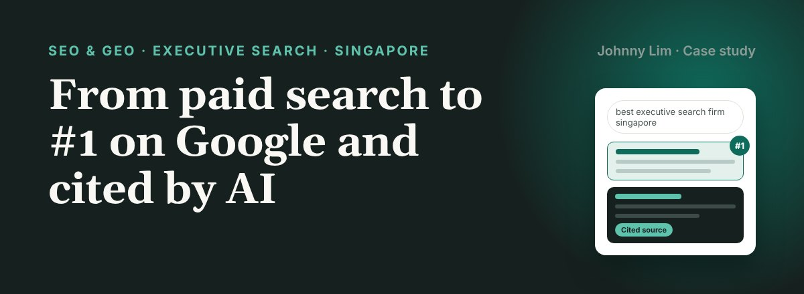
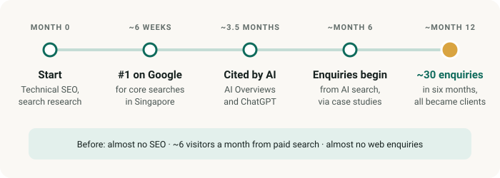

From paid search to #1 on Google and cited by AI: a Singapore executive search firm

A Singapore executive search firm had almost no SEO and relied on paid search that brought in about 6 visitors a month. I fixed the technical SEO, used Search Console to find what people actually searched for, rewrote the website around those searches and built a pillar page with supporting content. The website reached #1 on Google in about six weeks, was cited in Google AI Overviews and ChatGPT about two months later, and then brought in around 30 enquiries in six months. All of them became clients.
- ~6 weeksto #1 on Google in Singapore
- ~2 monthslater, cited in AI Overviews and ChatGPT
- ~30enquiries in six months, from AI search
- Allof those enquiries became clients

The situation
The firm had done almost no SEO. Most of its online marketing budget went into paid search, and that brought in about 6 visitors a month. The website generated almost no enquiries. New business came from cold calling and from people the sales team already knew.
That's a common position for specialist B2B firms. The website exists, but nobody finds it, so it isn't part of how the business wins clients.
What I did
1. Fixed the technical SEO
Before writing anything new, I made sure Google could crawl and index the site properly. There's no point improving content that search engines can't read.
2. Found out what people actually searched for
Instead of guessing keywords, I went into Google Search Console to see the searches that were already bringing people to the firm, even in small numbers. Those showed how real buyers described what they were looking for. I picked out the searches that mattered most, including "best executive search firm Singapore" and "top executive search firm Singapore".
3. Rewrote the website around those searches
I rewrote the website's content so it answered those searches directly, using the same language buyers used. The aim was for each page to clearly match what someone typing that search wanted to find.
4. Built a pillar page with supporting content
I created one in-depth pillar page on the firm's core topic, with supporting articles that each covered a related question and linked back to it. That structure shows search engines, and AI tools, that the firm covers the topic in depth rather than in one-off posts.
The firm's own talent survey also helped. Original data like that is exactly what AI answers like to quote, and it was picked up in AI Overviews too.
The results
- About six weeks in: the website reached #1 on Google in Singapore for "best executive search firm Singapore", "top executive search firm Singapore" and related searches.
- About two months after that: the firm started appearing in Google AI Overviews and ChatGPT answers for the same questions, and some of its case studies were cited directly.
- From around month six: enquiries started coming in from people who had found the firm through AI Overviews and ChatGPT, then read its case studies on the website. Over the next six months, around 30 enquiries came in this way.
- All of those enquiries became clients. These were serious buyers who had already researched the firm and read its case studies before getting in touch, so they arrived ready to talk business.
We know where these enquiries came from because we ask every new enquiry how they found us.
What didn't work
Paid search didn't work for this firm. It cost money every month and brought in very few visitors. We also tried paid ads on LinkedIn, and they didn't bring in many results either.
For a niche B2B service, the people searching are few but very specific. Paying per click didn't reach them well. Being the best answer to their exact question, in Google and in AI tools, did.
What I learned
- Start from real search data. Search Console showed how buyers actually described the service, which was more useful than any keyword tool's guesses.
- Ranking and AI citations go together. The AI citations came after the Google ranking, not instead of it. Solid SEO came first.
- Case studies close the deal. AI tools brought people to the site, but the case studies are what convinced them to get in touch.
- Be patient between visibility and enquiries. The ranking came within weeks, but enquiries took around six months to start. Expect a gap, and plan for it.
- Match the channel to the market. No single tactic works for every industry. Paid search works well for many businesses, especially where lots of people search for a product. For a niche B2B service, where searches are few but very specific, organic search and AI visibility were a far better fit.
For the thinking behind this approach, read SEO for recruitment firms: stop publishing generic content and SEO vs GEO vs AEO vs AIO.